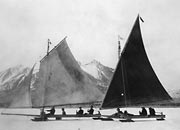
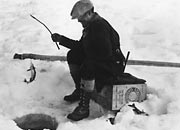
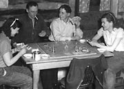
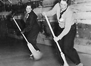
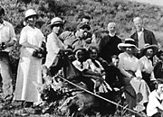

Yukoners have always used ingenuity and creativity to find ways to fill their leisure hours. First Nations people wrote songs to commemorate special events, played the drum, told stories and jokes and gave gifts. Dancing was and is a lively and important part of ceremonies such as potlatches.
With the huge influx of people during the first part of the 20th century, new customs and celebrations from all over the world were introduced to the Yukon. People found new ways to enjoy their lives. Both native and non-native people organized team sports like hockey and baseball. Curling and tennis were popular. Indoors, people played cards, held dances, played charades and organized fancy dress parties.
They skated; they skied; they snowshoed. They went on picnics and organized Kodak excursions. They swam; they stick-gambled; they played golf. They went on steamboat excursions to view the Midnight Sun. Sometimes traditional activities, like dog-sledding or fishing, evolved into sports or hobbies.
People continue to join together and celebrate important events, or even unimportant ones. Yukoners enjoy many special occasions; everything from music festivals, solstice celebrations, Christmas, and winter carnivals to the break-up of the ice, the return of the swans and Discovery Day.
“They would meet in the mountains among the balsam. My dad used to say they would sing and dance to the song.”
Tillie Smith
(Dene) Gedeni: Traditional Lifestyles of Kaska Women
Continue to The dignity of a districtA lot of fun
(Above) Tennis on the streets of Dawson, c.1900.
YA, Chisholm collection #5625
J. Williams ‘ice yachts’ at Carcross, c.1915. Williams worked on a White Pass section gang.
YA, Scott/Phelps collection, 89/31 #161
Ice-fishing,1930s.
YA, Tidd collection #7298
Dog musher Babe Southwick waiting for the race to start at Whitehorse, 1965.
YA, Whitehorse Star, March 1, 1965
Article in the Whitehorse Star documenting the tribute paid to Babe Southwick who died suddenly after placing 3rd in a dog sled race in 1965. Her racing bib, number 8, was retired from use.
YA, Whitehorse Star, March 1, 1965
Pearl Kazinsky, Carl Miller, Clarence Bleiler and Nora Hare playing cards, Elsa, 1950s.
YA, Hare collection #6867
Edith Rito and another woman curling, c.1940.
YA, Harbottle collection #6159
A choir picnic at Fort Reliance, 1916.
YA, Church Missionary Society collection, 88/35 #43